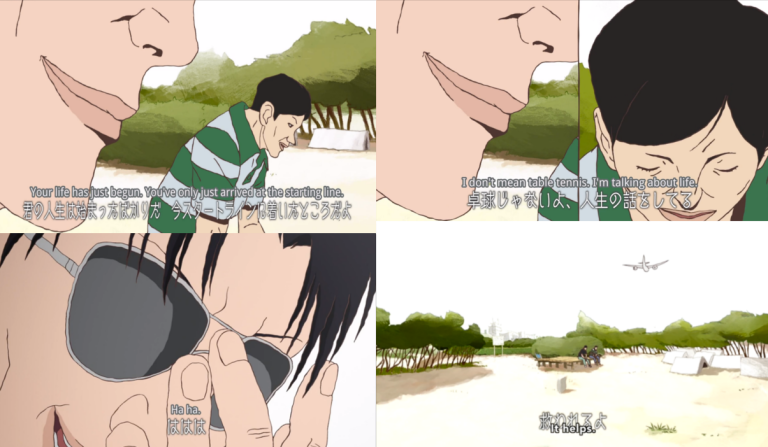

Re;AnimeSan
Re;AnimeSan
Re;AnimeSan
"The hero comes, the hero comes, the hero comes. Chant these words in your mind, and surely I'll come to you..."
The stonyfaced, taciturn table tennis champion Makoto Tsukimo, ironically known to most as "Smile," chants these words to himself both in the midst of psychologically and physically grueling table tennis matches and in other stressful situations of his life. He and his almost unbearably chipper companion, Yukata Hoshino (nicknamed Peco), have grown up playing table tennis nearly every day, but at this point in their lives, Smile suffers from a lack of ambition even as his friend aims to be the best table tennis player in Japan. The two have nonetheless stuck together and continue to enter tournaments, with Smile annoying both his coach and his opponents with his glib, apathetic attitude.
When I decided to watch Ping Pong: The Animation, it had one main draw for me: it was the latest show by director Masaaki Yuasa, and I've loved just about everything he's put out, with The Tatami Galaxy taking the cake as one of the best-composed anime series I've ever watched. Indeed, (Aiden's reviews of his other TV series should give you a pretty good picture of how I feel, since the two of us have similar views when it comes to his skill as an illustrator and storyteller. But there were a few things that made me wary of it, as excited as I was to have more Yuasa-directed anime in existence. For one thing,I really wasn't much of a fan of the Tekkon Kinkreet movie, which is based on a manga by the same author, but the main problem was simply that I'm just not all that interested in table tennis or in sports in general. With those two conflicting preconceptions in mind, I approached Ping Pong with cautious optimism and found that I'd had no reason to worry. It's a show whose insight into the psychology of competition goes far beyond what could have been a narrowly-focused series that only fans of table tennis would find interesting, and combined with the technical prowess of Masaaki Yuasa, Eunyoung Choi, and the rest of the production team, it makes for one of the most fascinating anime I've ever seen, albeit one that took some warming to.
About four years ago, I reviewed Tekkon Kinkreet and didn't really care much for the art style. I expected this show, with the same pedigree as that movie, to run into the same problems, but that wasn't the case, which means that I either owe Tekkon Kinkreet a rewatch and a second chance, or that Masaaki Yuasa is just much better equipped to handle the idiosyncrasies of Taiyou Matsumoto's designs and layouts than is Michael Arias (which is very possible). What immediately stuck out to me was that Ping Pong pulls off something that very few anime excel at or even attempt: simultaneously-occurring events juxtaposed onscreen together as manga panel-type divisions. I enjoyed this aspect of Ping Pong as much as I did because so much of the tension-building during the matches is dependent on the viewer registering the character's facial expressions (which I'll get to in a moment) alongside the events inciting them. I don't find table tennis that interesting to watch in real life (at least on TV), but Yuasa, Matsumoto, and co. bring the viewer face-to-face with the players, flip from angle to angle in a matter of seconds, and zoom in and out of the character's faces, only to reframe the camera on their body language moments later. It's nothing less than riveting, and it was simply impossible for me to take my eyes off it. And dear lord, have I never seen a show where body and facial language, from Smile's relentlessly pursed lips to Pico's forcibly whimsical and childlike swinging motions, tell so much of the story. There's only so much that the narration actually says or even needs to say, because the manner in which these characters express and carry themselves already tells so much about them; never have I seen a series that captures and highlights the notion of personality-through-body-language so well. Meanwhile, the small but important degree of exaggeration that Matsumoto carries out in the character designs and movements makes Ping Pong something that is almost certainly best-suited for the realm of animation, as grounded as the story is; the occasional but effective appearances of cartoonish personifications of the characters's dreams and fears, particularly Smile's memories of "the hero" mentioned in the synopsis, also leave me convinced of this.
Ping Pong is not a conventionally pretty or attractive show, even less so than, say, Kaiba, whose Disney-ish character designs could sell plushies aplenty if the characters themselves weren't so often subject to psychological and physical trauma. But then again, Ping Pong is not a conventional or pretty anime in any sense, and if you watch it, you do have to work somewhat to follow it or even to warm to it. Indeed, and I say this as a massive fan of Yuasa's previous works, it took me four or so episodes before I went from finding it curious to finding it utterly riveting and spellbinding. There's a lot that simply takes time to pick up on, down to the depressingly cynical-hedonist lyrics of the misleadingly upbeat, raucous, and punky opening theme, which rival Mawaru Penguindrum and its equally misleadingly poppy soundtrack as stark expressions of disillusionment with 90's Japanese society. Indeed, the theme of disillusionment with one's dreams, and one's means of covering that up, either via affected happiness (in Peco's case) or via taking on a nearly robotic personality (in Smile's case) emerges slowly and subtly in various ways beyond just the show's opening theme. There's the fact, for example, that Kong Wenge, a former table tennis star from China now attempting to make a comeback, feels cheated in having been forced to play in a country whose reputation he sees as lesser than that of his own. Yet this disdain barely conceals his own disdain towards himself for failing at a profession which, in his home country, has the highest possible stakes; his anger at having basically been exiled to regain his reputation combines with brief, bittersweet memories of his time in China, making it easy to tell where his attitude comes from.
As an aside, I'll add that considering the generally absent or caricatured portrayal of people from other Asian countries in anime, his VA does a fabulous job, he's as complex a character as his Japanese equivalents, and as far as I know, his Mandarin dialogue is all grammatically correct. Major props to the anime and manga for that.
But I feel that anything I say is at risk of simplifying Ping Pong, and it's anything but. If you choose to watch this show, I'd definitely say to pay good attention to the dialogue, since the writing often says as much or more via what it leaves out than via what it explicitly lays out, and since these absences often combine with a given facial expression or movement on the characters' part to make an important point. It is also a tight, fast-paced show in which nothing is wasted, and if you've seen The Tatami Galaxy, you'll have a sense of how much material Yuasa is packing into a single punch (though the dialogue in this show isn't quite as breathless). All the better, since things as tiny and as brief as the sounds of paddles pounding, sneakers squeaking, and the tone of the players' breathing can work to generate mood in this show. This is the sort of series that, even having seen it once and "knowing" the plot, I can predict I'd always be happy to go back and see what I had missed the first time, assuming that I had the time or attention span to do so (it's really not a show to ever watch when you're distracted or tired, I feel). You do become invested in the characters, but you do it slowly as the show hints, in various ways, how complex they are. It never outright demands you love them and while I don't always have a problem with shows that do, it's an easy approach to take and can slide into manipulation if not handled carefully. That's not at all the case here: you spend eleven twenty-three minute episodes with these people, and you know them, in all their complexities, by the very end.
And really, I guess if there's something I appreciate about Ping Pong more than anything, it's that an anime that does so little in the way of explicit appeals to emotion ultimately made me feel as invested as I did, and that it elicited so many feelings over the course of the show. The voice acting being spot-on helps, for one; the otherwise unknown Fukujurou Katayama, in particular, does a fantastic job of pulling off Peco's mix of silliness and wistfulness, and his delivery of his character's bizarre ramblings about junk food (of all things) gave me several good laughs over the course of the show. Indeed, the show is surprisingly funny, and one of the best characters is Peco and Smile's snarky, chain-smoking doujo master, Obaba Tamura (voiced by Masako Nozawa, the original voice of DBZ's Son Goku of all things), whose grim, bitter humor contrasts with Smile's stony, stoic demeanor and Peco's nylon smile. You don't need to be told when to laugh or when to be pumped up. You pick up on these things from the voice acting and from the nuances of the dialogue, the two of which combine wonderfully in the case Smile's hotheaded rival Manabu Sakuma, known as "Demon", whose inferiority complex and anger at Smile not taking him or the competition seriously is palpable but always just barely hidden throughout. In other words, Ping Pong may outwardly be a bit of a difficult show to penetrate, but once I latched on it, I absolutely had to see it out.


Each episode of Ping Pong was a joy for me, from the inked opening shots of its intensely cynical opening to the beautiful watercolored panning shots of its wonderfully earworm-y ending sequence (another one of Eunyoung Choi's contributions). I have to admit that the absence of any significant female characters besides Obaba is a downside for me, but it's one I'm fine overlooking given the quality of the show. When you have the time, check it out; Masaaki Yuasa had never disappointed me before this show came out, and as of now, his streak is unbroken.
Meaning that this is me, about now:
My only warning is that this show is best appreciated when you're awake, engaged, and have all the attention you can give, since it's an expert in the department of showing rather than telling but doesn't always even draw that much attention to what it does show. I'm happy to say that Masaaki Yuasa has done it again! — Nicoletta Christina Browne
Recommended Audience: There's nothing in the way of violence or fanservice, but the intensity of some of the characters' arguments might be too much for the littlest kids.
There are some shows that I consider “moments” shows. They’re shows you watch for the few seconds or few shots of brilliant beauty interspersed between a lot of reasonably good, but not great material. Ping Pong the Animation [Tatsunoko Productions, 2014] is what happens when you take a “moments” show and bring all the in between moments up to the level of the moments. It’s an unreservedly ambitious, glowingly creative and masterfully executed show worthy of the rating I’m about to give it. For all of the above, and everything I haven’t said yet, I’m giving Ping Pong the Animation a 9/10. (Ranking)
It says a great deal (and it’s certainly no coincidence) that Ping Pong is only the second show I’ve watched weekly to get a rating above an 8 (the first was Silver Spoon). As an anime watcher, I am enormously reliant on the holistic experience of marathoning a show for producing emotional engagement and sustained affection. But Ping Pong, through sheer artistic prowess, has somehow cut straight through my penchant for forgetting my feeling about a show over the long weeks in between episodes.
And, artistically, it’s tough to really make any sort of judgement on Ping Pong. It’s kind of ugly looking (as I’m told is typical of director Masaaki Yuasa’s works), but balances the twisted faces and convoluted postures with with direction and storytelling that dances like it’s a ballet. Ping Pong is, essentially, the result of a production in which every little piece is perfectly synchronized towards a single goal: direction, artwork, animation, writing, characters—they all point to the same thing.
This is a show about being alive.

There are a lot of different ways to live. You can live in fear. You can live in selfishness. You can live in hate, worry or anger. But, you can also live for love and happiness and for simply being alive. Life is the greatest gift we humans have. And you can live for a lot of different things. You can live for yourself, for others, for money, for ping pong or for life. Life is the one thing that you can live for, no matter how reflexive it is, no matter what. Because everything we experience on this earth is first predicted on being alive.
Not everyone in Ping Pong understood this at the start of the show. In fact, among Smile, Peco, Akuma, Kazama and Kong—none of them did. Smile lived in a state of perpetual mundanity and mediocrity. Peco lived in his own castle of fantasies, one that blinded him. Akuma lived in the anguish of never being good enough. Kazama lived in fear of failure. Kong lived in agony of loss. Each of these young men came to the ping pong table without being able to see beyond their own constructed world. And living in your own world is inherently a limiting experience. By doing so, each trapped himself within a cage of his own making and threw away the key.
The beautiful thing about Ping Pong is how those cages crash together, break each other down and fade away as men who understand what it means to be alive arise from the debris.
Ironically (or perhaps logically) it is the boy who first seems farthest away from this understanding who comes to it first: Kong Wenge (resident cool glasses guy). Because Kong has the most riding on the sport of table tennis (a return home—a return to his mother), he is the first to see his cage destroyed, as Kazama defeats him and banishes him to a life of exile on a distant island. Amidst the wreckage of his career and his life, Kong is forced to confront the realities of staking his entire life and self-worth on his accomplishments at the ping pong table. It’s the classic saying: put all your eggs in one basket and if you drop the basket, you lose everything. But as Kong struggles to figure out who he is without ping pong, he finds solace in the words of his coach, his mother, and in the very teammates he once spurned.
In the magnificent Christmas episode, an episode that highlights the differences in the respective journeys of the characters of Ping Pong, we see Kong as the only one truly able to enjoy the holidays, to enjoy life. Indeed, having lost his previous way of life, Kong is forced to embrace the world outside himself and, in doing so, finds a joy he’s been lacking for a long time.

Kong’s arc is more or less a foreshadowing of the arcs each of the other players—Smile, Peco, Kazama and Akuma—go through. Each of them finds their previous way of life attacked by the others, and each of them is forced to confront the world in an entirely new way. And in opening themselves up to the world beyond their own fragilely constructed cages, they find that the world is a whole lot more beautiful than they imagined.
Whether they be dragon, hero or robot, each player finds their way in life. Ping Pong wields these symbolic roles in a manner that both simplifies and ornaments the story and theme. By placing each character into a sort of archetype, the show compresses the complex motivations, feelings and actions of each character into an easily accessible package, miraculously without sacrificing the essence of the character. Symbolism always runs the risk of esotericism, but Ping Pong integrates the symbols into the story as if they were necessary to its very existence—and they are. The symbols function as the skeleton of the story, molding the separate character arcs into a fascinatingly simple whole. Ping Pong is not five stories of five characters. It’s one story.
My favorite shot of the entire show.
If you can’t live life for life’s own sake, you won’t be able to find happiness. You must first accept being alive before you can accept anything else. You must accept everything about being human and about being yourself—and then live your life according to those truths. It doesn’t so much matter if you see yourself as a hero as it matters if you can find joy in living like that. It doesn’t so much matter if you center your life on one passion as it matters if you can truly live as yourself like that.
Ping Pong reminds us that we’re alive. In all our many ways, along our many paths, we’re alive. And if we can help others to understand this as we live ourselves, the world will be a better place for it.
RECOMMENDATION:
I unreservedly recommend Ping Pong the Animation to anyone at all. These are universal messages, ones that everyone should hear. As an artistic experience, it’s phenomenal. And for the last time, this show is NOT ACTUALLY ABOUT PING PONG, so don’t ignore it because it’s a sports anime.
Reasons to Watch:
{kind=link}
{kind=link}
{kind=link}
{kind=link}